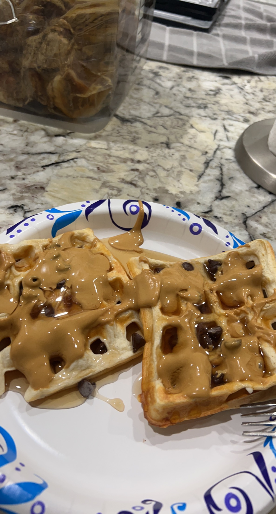

protein waffles

Description:
A true king of diet meal. Insane macros.
- 60g liquid egg whites
- 75g plain nonfat greek yogurt
- 25g water
- 56g pancake/waffle mix
- pinch of salt
- sugar free maple syrup
- sugar free chocolate syrup
- PB2 + water to thin
- Preheat waffle maker to medium heat
- Mix the first 5 ingredients
- Evenly distribute the batter into the waffle maker and cook according to waffle maker instructions
- Prepare toppings according to preferences while the waffles are cooking
- Let the waffles steam off inside the waffle maker for an extra minute or two to cook the inside through if making belgian waffles
- Remove the waffles from the maker with tongs onto a plate
- Pour the maple syrup, then the chocolate syrup, then the pb2